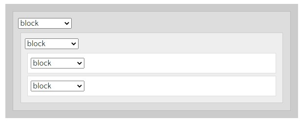
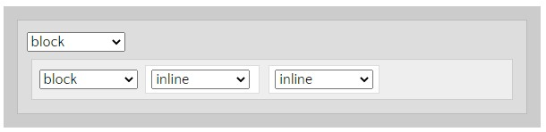
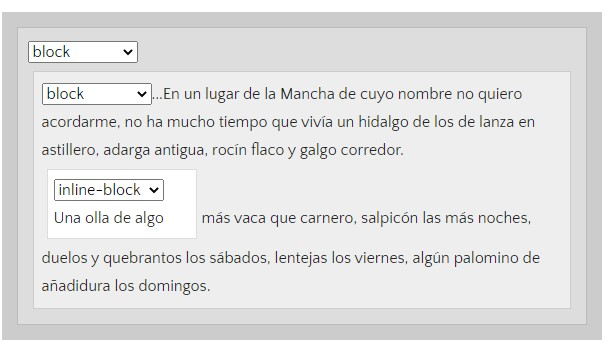
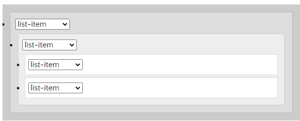

Diseñar la OVI solicitado en HTML5 y CSS3 y poder visualizarlo en diferentes navegadores teniendo en cuenta funcionabilidad y usabilidad
Las propiedades CSS nos permitirán dar una apariencia agradable al usuario en nuestra página web, por tanto aquí encontrarás algunas de las propiedades básicas que permiten mejorar la visualización de nuestro contenido.
Define la familia tipográfica. Es conveniente poner una lista de dos o tres tipografías separadas por coma, porque si el usuario no tiene instalada la tipografía que nosostros elegimos, el navegador opta por mostrar la siguiente que debería ser una similar, si tampoco la tiene instalada, mostrará la tipografía por defecto.
Define el tamaño de la fuente y el valor se puede escribir en pixels o en ems. En este momento se recomienda usar ems. Los dos son valores relativos, el pixel es un valor relativo a la resolución de la pantalla, pero el em es relativo al tamaño de la fuente definida por el usuario. Si el usuario no cambió la configuración, el valor por defecto de los textos en todos los navegadores es de 16px. Entonces 1em = 16px.
Define el color de la tipografía. Los colores se pueden escribir de 3 formas distinas: con sistema hexadecimal, por ejemplo: #FF0000 (es rojo). Con los nombres de los colores (más limitado) por ejemplo: black, red, green. O usando RGB, esta paleta permite agregar el canal alfa para hacer transparencias.
Define el ancho de un elemento, el valor se puede escribir en pixels, ems o porcentaje.
Definen el ancho máximo o mínimo de un elemento. Muy importante en sitios adaptables.
Define el alto de un elemento, el valor se puede escribir en pixels, ems o porcentaje.
Definen el alto máximo o mínimo de un elemento. Muy importante en sitios adaptables.
Es la distancia desde el borde de un elemento hasta su contenido.
Es la distancia entre un elemento y otro (desde el borde de un elemento hacia afuera)
Define el borde de un elemento, su color, su estilo y grosor.
Define los fondos de un objeto. El fondo puede ser una imagen o un color. El color puede ser pleno o degradado. La imagen se puede repetir formando una trama (es lo que ocurre por defecto) o se puede especificar que no repita y que se coloque en determinada posición.
Display es la propiedad más importante para controlar estructuras y permite estableceR los tipos de visualización interna y externa de un elemento, como los siguientes:
El elemento es mostrado como un elemento block, o sea como los párrafos o encabezados siempre fueron mostrados. Un elemento block siempre tiene algo de espacio por encima y debajo, que lo separa de los demás elementos, y no acepta ningún otro elemento a su lado - si no está indicado de otra manera (float).
El elemento aparece en línea por ejemplo dentro de un elemento block. Ejemplos de elementos definidos como inline: span, em, strong, etc... Cuando un elemento inline se encuentra entre dos elementos block, el elemento inline se comporta como un block anónimo, de mínima anchura (por ejemplo la anchura del texto dentro de este elemento.)
El elemento aparece en línea pero se comporta como un elemento block. Un elemento inline-block resulta muy útil cuando queremos dar una anchura al elemento. En el siguiente ejemplo la anchura del elemento inline-block es de 150px.
El elemento se comporta como un elemento de lista "li", lo que quiere decir que tendrá una viñeta (bullet) delante (excepto en algunos navegadores muy antiguos)
Otro valor común de display es none. Algunos elementos especializados como script usan este por defecto. Es comúnmente usado en JavaScript para ocultar o mostrar elementos sin eliminarlos ni recrearlos. Esto es diferente de visibility. Usar display: none no dejará espacio donde el elemento se encontraba, pero visibility: hidden; dejará un espacio vacío.